OTOBO Documents¶
Beschreibung¶
Das Documents-Addon erweitert OTOBO um ein vollständiges Dokumentenmanagement. Aus zentral gepflegten Vorlagen entstehen standardisierte Dokumente – Betriebshandbücher, Service-Steckbriefe, Übergabeprotokolle, Wartungsberichte – die sich automatisch aus den Daten der CMDB (Configuration Management Database) befüllen.
Statt Daten manuell aus OTOBO in Word zu kopieren, definiert ein Administrator die Vorlage
einmalig mit Kapiteln und Platzhaltern wie {{CI:Name}}. Beim Erzeugen eines Dokuments
wählt der Agent lediglich die Vorlage und das zugehörige Config Item – alle Platzhalter werden
mit den echten, aktuellen Werten aufgelöst und als professionelles PDF ausgegeben.
Vorlagenbasiert: Layout, Kapitelstruktur und Inhalte werden einmal zentral gepflegt.
CMDB-Integration: Platzhalter greifen direkt auf Config Items, deren Attribute und verknüpfte Objekte zu – inklusive dynamischer Felder und Referenzketten.
WYSIWYG-Editor: Vorlagen werden komfortabel im Browser bearbeitet (CKEditor 5), mit Kapitelbaum, Drag & Drop und Live-Seitenführung.
PDF-Export: Hochwertige PDFs mit Deckblatt, Kopf-/Fußzeilen und Seitenzahlen, erzeugt über WeasyPrint.
Revisionssicher: Jede Kompilierung erzeugt eine unveränderliche, versionierte Fassung.
Schnellanlage aus dem CI: Direkt aus der Config-Item-Ansicht lässt sich mit einem Klick ein passendes Dokument erzeugen.
Einsatzszenarien¶
Das Addon richtet sich an Organisationen, die wiederkehrende, datengetriebene Dokumente standardisieren wollen:
Betriebs- und Servicehandbücher je Server, Anwendung oder Service – immer auf dem aktuellen Stand der CMDB.
Übergabe- und Abnahmeprotokolle im Projektgeschäft, mit Kunden- und CI-Daten vorbefüllt.
Wartungs- und Inventarberichte, die Attribut-Tabellen aus Config Items übernehmen.
Standardisierte Steckbriefe für Assets, mit einheitlichem Corporate Layout.
Der Nutzen: weniger manuelle Pflege, konsistentes Layout über alle Dokumente hinweg, nachvollziehbare Versionierung und eine einzige Datenquelle (die CMDB) statt verteilter Kopien.
Systemvoraussetzungen¶
Framework¶
OTOBO 11.0.x
Pakete¶
Das Addon setzt das Paket ITSMConfigurationManagement (CMDB) voraus – es wird bei der Installation als Abhängigkeit erwartet.
Software von Drittanbietern¶
WeasyPrint als HTTP-Service (Docker-Container) für die PDF-Erzeugung. Der Container wird mit dem Addon bereitgestellt und über die SysConfig angebunden.
Überblick¶
Admin-Handbuch
Anwender-Handbuch
Referenz
Installation¶
Das Addon wird als OPM-Paket über den OTOBO-Paketmanager installiert.
Bemerkung
ITSMConfigurationManagement (CMDB) muss installiert sein – das Documents-Addon baut darauf auf.
Der Paketmanager wird zur Installation genutzt.
Es sollten bereits Config Items in der CMDB gepflegt sein, da Dokumente immer einem Config Item zugeordnet werden.
Installation über die Konsole:
bin/otobo.Console.pl Admin::Package::Install Documents-x.x.x.opm
Alternativ im Agenten-Frontend unter Admin → Paketverwaltung das OPM-Paket hochladen
und installieren. Bei der Installation wird – falls nicht vorhanden – die Gruppe
documents_adm angelegt.
Im Anschluss muss der WeasyPrint-Container erreichbar und in der SysConfig hinterlegt sein (siehe nächster Abschnitt), damit der PDF-Export funktioniert.
Konfiguration¶
Alle Einstellungen finden sich unter Admin → SysConfig über die Suche nach
Documents.
Einstellung |
Standard |
Beschreibung |
|---|---|---|
|
|
Basis-URL der WeasyPrint-HTTP-API. |
|
|
Timeout für Anfragen an WeasyPrint (Sekunden). |
|
|
Maximale Tiefe für verkettete Referenz-Platzhalter (Punkt-Notation). |
|
|
Cache-Lebensdauer des aus der CMDB abgeleiteten Platzhalter-Katalogs in Sekunden ( |
|
|
Reguläre Ausdrücke, die dynamische Felder nur im Picker ausblenden (der Compiler löst sie weiterhin auf). |
|
Musterfirma GmbH, Max Mustermann, Musterstraße 42, 76131, Karlsruhe |
Beispieldaten für die Vorlagen-Vorschau (Kunde). |
|
SRV-APP-001, Server, CI00012345 |
Beispieldaten für die Vorlagen-Vorschau (Config Item). |
Admin-Handbuch¶
Dieses Handbuch beschreibt, wie ein Administrator Kategorien, Vorlagen, Kapitel und Platzhalter pflegt, nachdem das Documents-Modul über den Paketmanager installiert wurde.
Zugriff auf die Vorlagenverwaltung¶
Die Vorlagenverwaltung wird im Admin-Bereich unter dem Eintrag „Dokumentvorlagen“
(Bereich Verschiedenes) geöffnet. Der Zugriff ist auf die Gruppe admin beschränkt.
{kind=link}
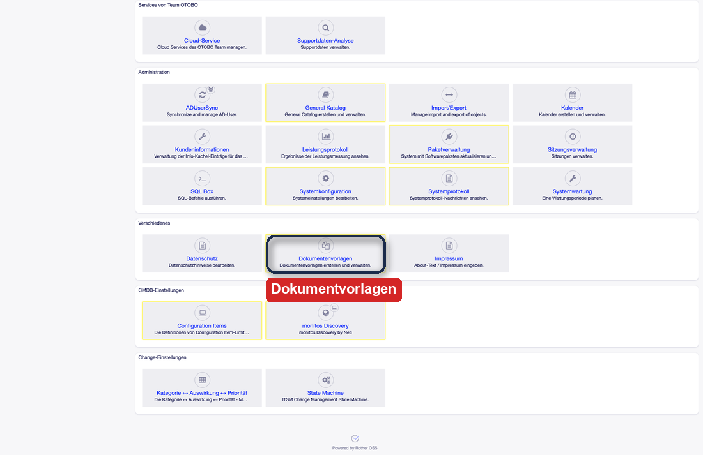
Abb. 1 Einstieg über die Kachel Dokumentvorlagen im Admin-Bereich (Bereich Verschiedenes).¶
Die Startseite der Vorlagenverwaltung gliedert sich in zwei Bereiche:
links der Kategoriebaum (FancyTree),
rechts die Tabelle der Vorlagen mit den Spalten Name, Kategorie, Gültigkeit, Erstellt und Geändert sowie einer Aktion zum Kopieren.
Über das Filterfeld lassen sich Baum und Tabelle gleichzeitig durchsuchen.
{kind=link}
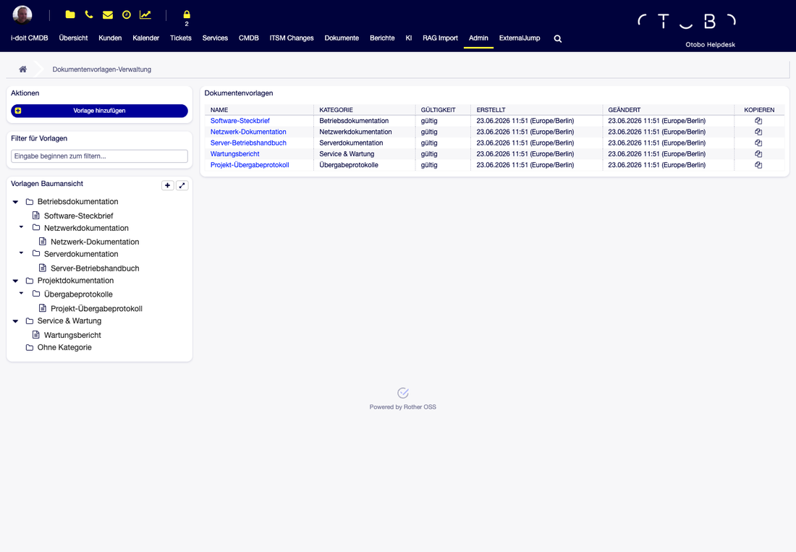
Abb. 2 Vorlagenverwaltung: Kategoriebaum links, Vorlagentabelle rechts, gemeinsames Filterfeld.¶
Kategorien verwalten¶
Kategorien strukturieren die Vorlagen in einer Baumhierarchie. Sie werden ausschließlich hier in der Vorlagenverwaltung gepflegt; Dokumente erben ihre Kategorie später von der verwendeten Vorlage.
Im Kategoriebaum stehen folgende Aktionen zur Verfügung:
Kategorie anlegen – als Wurzel- oder Unterkategorie.
Umbenennen – per Inline-Bearbeitung (Taste
F2).Verschieben – per Drag & Drop; sowohl Kategorien als auch Vorlagen lassen sich in eine andere Kategorie ziehen.
Zur Wurzelkategorie machen – eine Unterkategorie auf die oberste Ebene heben.
Löschen – eine Kategorie entfernen.
{kind=link}
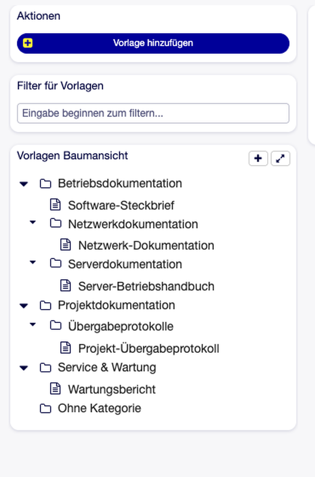
Abb. 3 Der Kategoriebaum mit Hierarchie – Kategorien per Drag & Drop und Inline-Bearbeitung pflegbar.¶
Bemerkung
Der aufgeklappte Zustand des Baums wird im Browser gespeichert und bleibt zwischen Sitzungen erhalten.
Vorlage anlegen und bearbeiten¶
Eine neue Vorlage wird über die Aktion „Vorlage hinzufügen“ angelegt, eine bestehende durch Klick auf ihren Namen geöffnet. Der Vorlageneditor besteht aus drei Reitern:
1. Allgemein
Name (Pflichtfeld, max. 200 Zeichen)
Beschreibung (Freitext)
Kategorie – Zuordnung in den Kategoriebaum (optional)
CI-Klassen – Mehrfachauswahl der Config-Item-Klassen, für die diese Vorlage als Standard gilt (siehe Standard-CI-Klassen zuordnen)
Gültigkeit – gültig / ungültig
2. Deckblatt
Der Deckblatt-Inhalt wird im CKEditor 5 (WYSIWYG) gepflegt und unterstützt Platzhalter. Hier entsteht die erste Seite des Dokuments (Titel, Logo, CI-/Kundendaten).
3. Kopf-/Fußzeile
Kopf- und Fußzeile werden als HTML in einfachen Textfeldern gepflegt (kein WYSIWYG),
da sie direkt in das Seitenlayout (laufende Kopf-/Fußzeilen) eingebunden werden. Hier lassen
sich z. B. Seitenzahlen über die Platzhalter {{System:PageNumber}} und
{{System:PageCount}} einsetzen.
{kind=link}
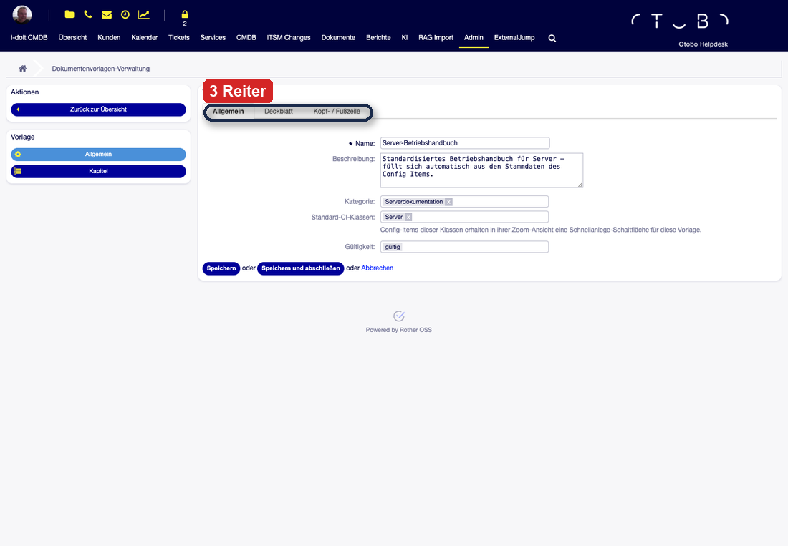
Abb. 4 Der Vorlageneditor mit den drei Reitern Allgemein, Deckblatt und Kopf-/Fußzeile.¶
Gespeichert wird über „Speichern“ oder „Speichern & Schließen“. Der zuletzt aktive Reiter bleibt erhalten. In das Deckblatt eingefügte Bilder werden beim Speichern als eingebettete Daten dauerhaft hinterlegt.
Über die Kopier-Aktion in der Vorlagenübersicht lässt sich eine Vorlage vollständig duplizieren – inklusive aller Kapitel und ihrer Hierarchie.
Standard-CI-Klassen zuordnen¶
Über das Feld CI-Klassen im Reiter Allgemein wird eine Vorlage einer oder mehreren Config-Item-Klassen zugeordnet (z. B. Server, Anwendung). Diese Zuordnung steuert die Schnellanlage aus dem Config Item: Beim Aufruf eines Config Items werden in der Seitenleiste genau die Vorlagen vorgeschlagen, deren Standard-Klasse zur Klasse des Config Items passt.
{kind=link}
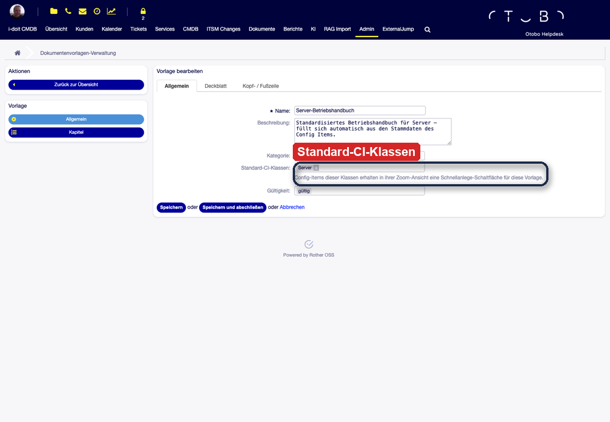
Abb. 5 Über Standard-CI-Klassen wird die Vorlage einer CI-Klasse zugeordnet – die Basis der Schnellanlage.¶
Kapitel-Editor¶
Der Inhalt einer Vorlage wird in Kapiteln strukturiert. Den Kapitel-Editor erreicht man aus dem Vorlageneditor; er ist als geteilte Ansicht aufgebaut:
links der Kapitelbaum mit gepunkteter Nummerierung (1, 1.1, 1.1.1),
rechts der Inhalt des ausgewählten Kapitels im CKEditor 5.
{kind=link}
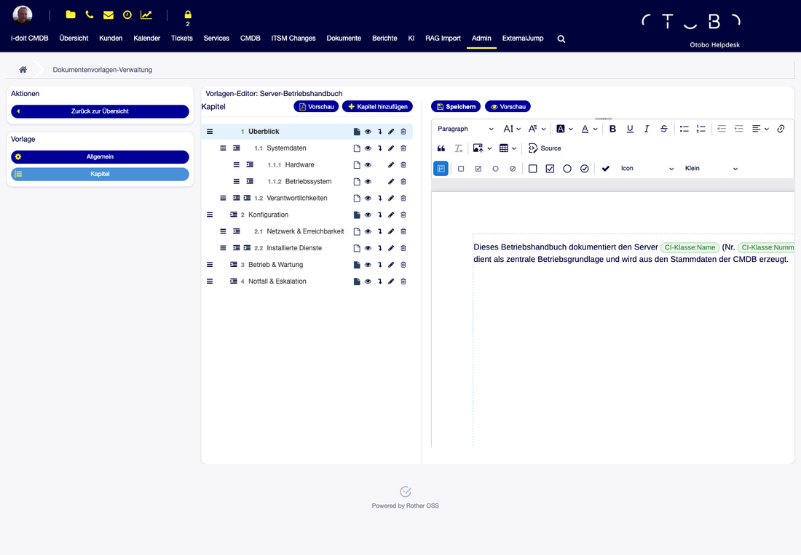
Abb. 6 Kapitel-Editor: Kapitelbaum links, CKEditor mit Platzhalter-Chips rechts.¶
Funktionen im Kapitelbaum:
Kapitel hinzufügen und Unterkapitel hinzufügen
Einrücken / Ausrücken zum Ändern der Ebene (maximal drei Ebenen)
Umbenennen und Löschen (mit Warnung bei Unterkapiteln)
Sortieren per Drag & Drop am Anfasser
Seitenumbruch vor Kapitel – pro Kapitel über eine Checkbox steuerbar (standardmäßig aktiv), sodass jedes Hauptkapitel auf einer neuen Seite beginnt.
Der Kapitelinhalt wird mit Strg/Cmd + S gespeichert; ungespeicherte Änderungen
werden beim Verlassen der Seite gemeldet.
{kind=link}
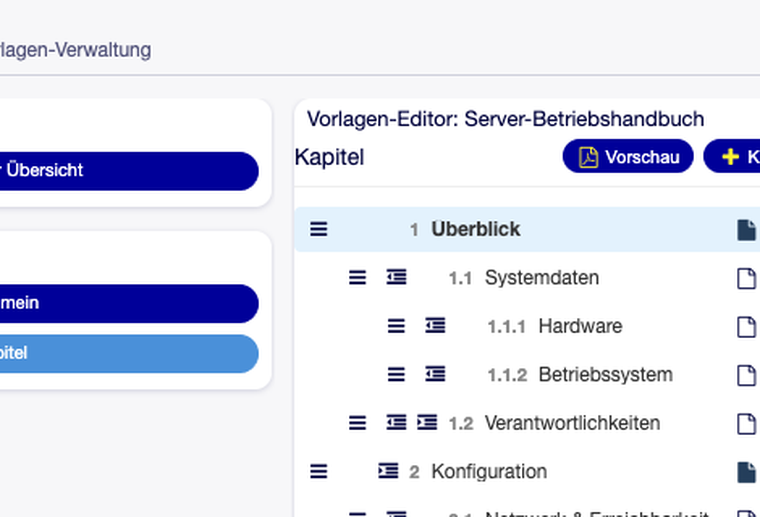
Abb. 7 Kapitelbaum mit gepunkteter Nummerierung, Seitenumbruch-Steuerung und Aktionen je Kapitel.¶
Platzhalter-System¶
Platzhalter sind der Kern des Addons: Sie binden lebende Daten in Vorlagen ein. Beim Kompilieren eines Dokuments werden sie durch die echten Werte des verknüpften Config Items und seiner Umgebung ersetzt.
Syntax
Platzhalter stehen in doppelten geschweiften Klammern, der Schlüssel folgt dem Muster
Namespace:Feld:
{{CI:Name}}
{{CI:Number}}
{{Date:Long}}
Über Punkt-Notation lassen sich Referenzen verfolgen, etwa von einem Config Item zu einem verknüpften Verantwortlichen oder Standort:
{{CI:Verantwortlicher.Email}}
{{CI:Server:Location-ReferenceToLocation.Name}}
Die Verschachtelungstiefe ist über Documents###Placeholder###MaxReferenceDepth
begrenzt (Standard 3).
Platzhalter einfügen (Picker)
Im CKEditor stehen zwei Wege zur Verfügung:
Beim Tippen von
{{öffnet sich eine hierarchische Auswahl zum Durchklicken (Drill-down) – Navigation perTab/Enter, zurück mitBackspace, Abbruch mitEsc.Über die Werkzeugleiste öffnet „Platzhalter-Auswahl“ ein Fenster mit Breadcrumb-Navigation, Suche und schrittweise nachgeladenem Baum.
Eingefügte Platzhalter werden im Editor als farbige Chips dargestellt, intern aber als reiner
Text {{Schlüssel}} gespeichert.
{kind=link}
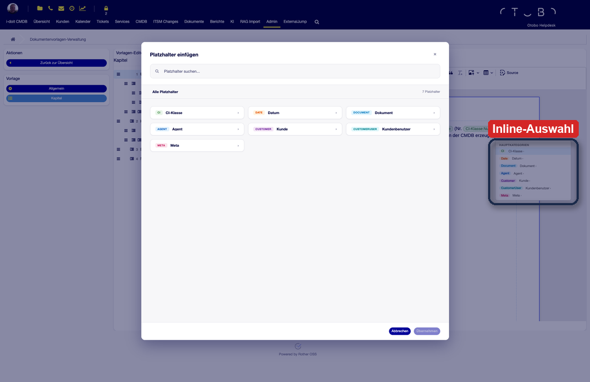
Abb. 8 Platzhalter einfügen: das Auswahl-Fenster und die kleine Inline-Auswahl nach Eingabe von {{.¶
Gültigkeitsprüfung (Health-Check)
Beim Laden des Editors werden verwaiste oder ungültige Platzhalter-Schlüssel markiert, sodass fehlerhafte Verweise früh auffallen.
Der Platzhalter-Katalog
Der Auswahlbaum wird live aus der CMDB aufgebaut und zwischengespeichert (siehe
CacheTTL). Er enthält die allgemeinen CI-Attribute, je Klasse die definierten dynamischen
Felder sowie statische Bereiche für Datum, Dokument, Agent, Kunde und Kundenbenutzer. Die
vollständige Liste der Namespaces findet sich in der Platzhalter-Referenz.
Vorschau und Seitenführung im Editor¶
Bereits während der Bearbeitung lässt sich eine PDF-Vorschau der Vorlage erzeugen (mit Beispieldaten aus der SysConfig, siehe Konfiguration). Zusätzlich blendet der Editor Seitenführungen ein, die die spätere Seitenaufteilung von WeasyPrint simulieren – so ist schon beim Schreiben erkennbar, wo ein Seitenumbruch fällt.
{kind=link}
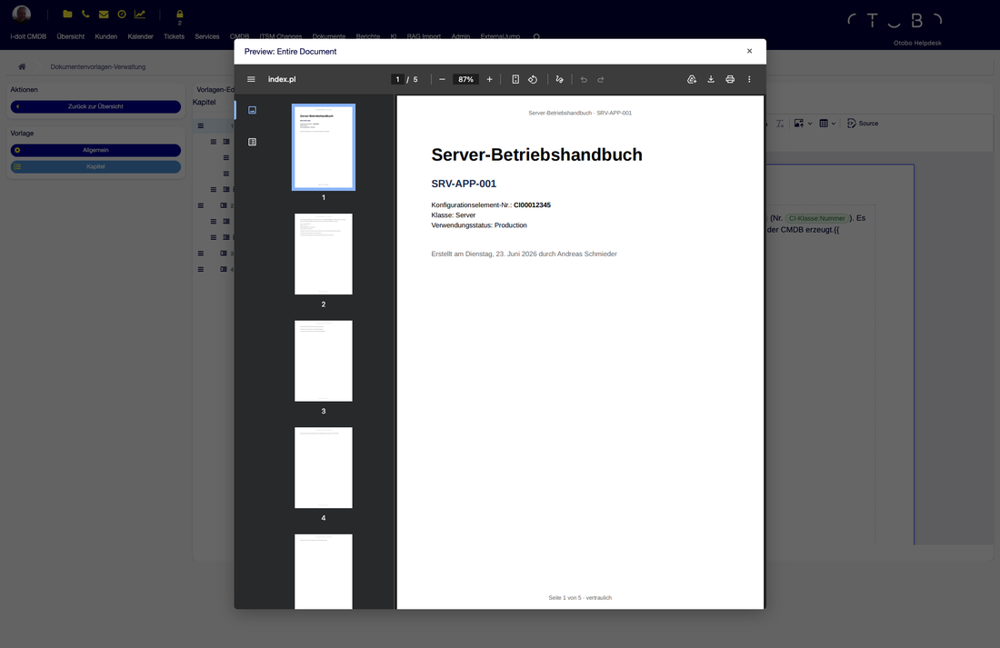
Abb. 9 PDF-Vorschau aus dem Editor – Deckblatt, Kopf-/Fußzeile und Seitenzahlen (mit Vorschau-Demodaten).¶
Anwender-Handbuch¶
Dieses Handbuch richtet sich an Agenten, die aus den vorbereiteten Vorlagen Dokumente erzeugen.
{kind=link}
Neues Dokument anlegen¶
Über „Neues Dokument“ öffnet sich die Anlagemaske mit folgenden Feldern:
Titel (Pflichtfeld, max. 250 Zeichen)
Vorlage (Pflichtfeld) – Auswahl über ein hierarchisches Klappmenü, in dem die Kategorien als nicht auswählbare Überschriften dienen; Vorlagen ohne Kategorie erscheinen unter „Ohne Kategorie“.
Config Item (Pflichtfeld) – Suche per Auto-Vervollständigung (nach Name oder CI-Nummer). Das Dokument wird zwingend einem Config Item zugeordnet, da daraus die Platzhalter aufgelöst werden.
{kind=link}
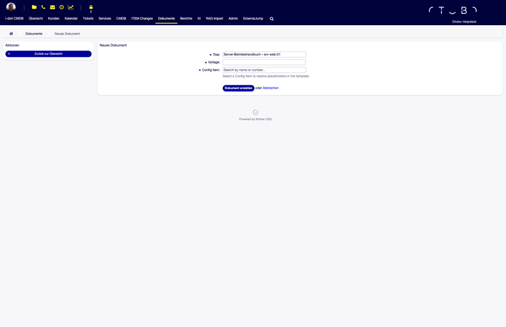
Abb. 11 Neues Dokument: Titel, Vorlage (hierarchische Auswahl) und verpflichtendes Config Item.¶
Nach dem Speichern wird das Dokument im Status Entwurf angelegt und die Detailansicht geöffnet.
Schnellanlage aus dem Config Item¶
In der Config-Item-Detailansicht (CMDB) erscheint in der Seitenleiste das Widget „Dokument erstellen“. Es bietet:
einen allgemeinen Button „Neues Dokument“, der die Anlagemaske mit dem aktuellen Config Item vorbefüllt öffnet,
falls für die Klasse des Config Items Standard-Vorlagen hinterlegt sind, eine Liste dieser Vorlagen mit jeweils einem
+-Button. Dieser öffnet die Anlagemaske direkt mit gewählter Vorlage, verknüpftem Config Item und vorbelegtem Titel („Vorlagenname – CI-Name“).
{kind=link}
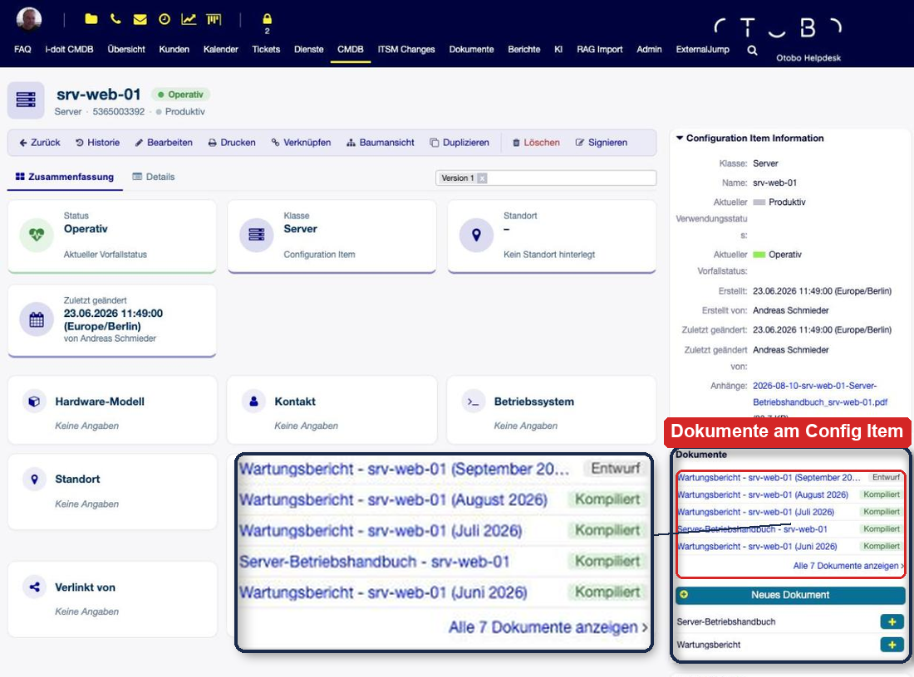
Abb. 12 Schnellanlage direkt aus dem Config Item – vorgeschlagen werden die zur CI-Klasse passenden Vorlagen.¶
So lässt sich aus einem konkreten Config Item heraus mit einem Klick das passende Dokument erzeugen.
Kompilieren und Revisionen¶
Ein Dokument enthält selbst keinen frei editierbaren Text – sein Inhalt ergibt sich aus der Vorlage und den aufgelösten Platzhaltern. Über „Kompilieren / Revision erzeugen“ wird der aktuelle Stand berechnet und als Revision gespeichert; dabei kann ein Kommentar vergeben werden. Mit der ersten Kompilierung wechselt der Status von Entwurf auf Kompiliert.
Jede Revision ist eine unveränderliche Momentaufnahme. Das Revisions-Widget listet alle Fassungen (Nummer, Kommentar, Erstellt von, Datum, PDF-Download), neueste zuerst. Ein Klick auf eine Zeile lädt die jeweilige Fassung in die Vorschau.
{kind=link}
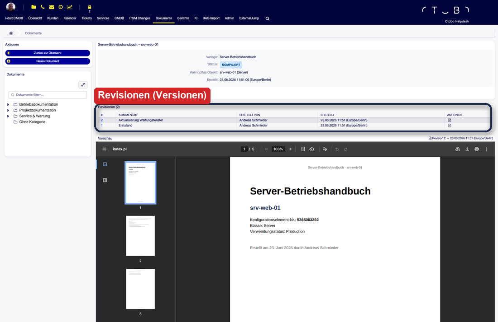
Abb. 13 Dokument-Detailansicht mit Revisions-Widget und eingebetteter PDF-Vorschau.¶
Bemerkung
Revisionen werden nicht überschrieben. Ändert sich die Datenlage im Config Item, erzeugt man durch erneutes Kompilieren einfach eine neue Revision – die alten Stände bleiben als Nachweis erhalten.
Vorschau und PDF-Export¶
In der Detailansicht stehen drei Aktionen bereit:
Vorschau – erzeugt eine PDF-Vorschau des aktuellen Stands, ohne eine Revision anzulegen. Die Anzeige ist mit „Aktueller Stand (Live)“ gekennzeichnet.
Kompilieren – erzeugt eine neue Revision (siehe oben).
PDF exportieren – lädt die gewählte Revision als PDF herunter (Dateiname
Name_RevN.pdf). Solange keine Revision existiert, ist der Export deaktiviert.
{kind=link}
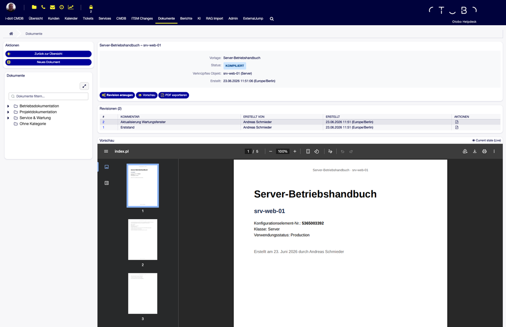
Abb. 14 Live-Vorschau des aktuellen Stands; der Export als PDF erfolgt je Revision.¶
Referenz¶
PDF-Erzeugung mit WeasyPrint¶
Die PDF-Ausgabe erfolgt über WeasyPrint, das als externer HTTP-Service (Docker-Container)
betrieben wird. URL und Timeout stammen aus der SysConfig (Standard http://localhost:5001,
30 Sekunden).
Der Compiler erzeugt aus Deckblatt, Kapiteln, Kopf-/Fußzeile und aufgelösten Platzhaltern ein vollständiges HTML-Dokument (A4, 2 cm Ränder, eingebettete Schrift Liberation Sans für ein einheitliches Schriftbild, laufende Kopf-/Fußzeilen und Seitenzahl-Zähler).
WeasyPrint rendert dieses HTML serverseitig in ein PDF.
Der Inhalt wird UTF-8-kodiert an den Service übergeben; zurück kommen die rohen PDF-Bytes.
Bemerkung
Ein automatisches Inhaltsverzeichnis wird in der aktuellen Fassung nicht erzeugt.
Für den Betrieb empfiehlt sich eine Prüfung der Erreichbarkeit des WeasyPrint-Dienstes
(Health-Check auf /health), bevor Dokumente produktiv erzeugt werden.
Berechtigungen und Gruppen¶
Die Vorlagenverwaltung (Admin) ist auf die Gruppe
adminbeschränkt. Bei der Installation wird zusätzlich die Gruppedocuments_admangelegt.Die Dokumentübersicht der Agenten ist für alle angemeldeten Agenten sichtbar.
Das Schnellanlage-Widget erscheint an jedem Config Item; die vorgeschlagene Vorlagenliste richtet sich nach der Klasse des Config Items.
Platzhalter-Referenz¶
Die folgende Tabelle listet die verfügbaren Platzhalter-Namespaces. Feldnamen für CI: und
Field: ergeben sich aus der jeweiligen Klassendefinition bzw. den definierten Feldern.
Namespace |
Beispiele |
|---|---|
|
|
|
|
|
|
|
|
|
|
|
|
|
|
|
|
|
|
Über¶
Dieses Handbuch beschreibt das OTOBO Documents-Addon.